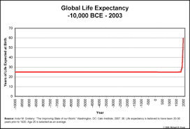

Despite the recurring assurances of futurists and scientists that humanity is on the threshold of conquering death and bringing about an end to aging, there will be no such radical life extension. It’s not going to happen. I will articulate the reasons for my pessimistic (realistic) view in this article.

The irrepressible optimists like futurist Ray Kurzweil, author of Fantastic Voyage: Live Long Enough to Live Forever, like to point to the fact that the average human lifespan has risen dramatically over the past century. They claim that the average human lifespan (currently about 80 years in developed nations) has doubled since the early 20th century and tripled since the Middle Ages. While this is technically true, it is very misleading. To the uncritical mind, such statistics seem to imply that no one lived to old age up until very recently and that there were no elderly people in 1900, the Middle Ages, and surely not in a pre-civilization era. This is emphatically not true.
The key word here is average. The average human lifespan was so short in earlier eras due to a very high infant mortality rate. Before the development of germ theory and the attendant development of sterile medical practices, it was not uncommon for 1 in 3 or 1 in 2 children to die at birth or shortly thereafter. Before the development of antibiotics and vaccines, many succumbed in childhood to a myriad of diseases such as smallpox, scarlet fever, and cholera.
If half of a population dies at age 0 and the other half lives to 70, then the average lifespan will be 35 years. If you survived birth and childhood and reached adulthood, you had a very good chance of living a full life of 70-75 years. There have been grandparents and the elderly for as long as there have been humans. Most of the Greek philosophers lived to a ripe old age (into their 80s) more than 2,000 years ago.
This is very important to understand: the increase in average human lifespan is due almost entirely to the dramatic reduction in infant mortality. It is no coincidence that the nations with the highest infant mortality rates (African nations) also have the shortest average lifespans and the nations with the lowest infant mortality rates (Western nations and select Asian nations like Japan) have the longest average lifespans.
In countries with good healthcare systems and expertly trained medical staff, they will almost never lose a newborn. This is the major refutation to the claims of starry-eyed optimists who love to point to a plot showing the exponential increase in human life expectancy and claim this trend will continue. It won’t. Infant mortality has already been eradicated. All of modern medicine (heart surgery, pacemakers, organ transplants, etc.) has added at most 10-15 years to what the human lifespan would otherwise be.
Everything from intelligence to baldness to even longevity seems to be encoded in our genes and is beyond our control. We’ve all seen the stories on the news of some Appalachian hillbilly who’s celebrating his 100th birthday and claims the key to longevity is three shots of moonshine a day, or some woman in Georgia who was born a sharecropper and is celebrating her 105th birthday. We’re also familiar with the fitness neurotic who never missed a daily workout only to keel over at 55 from a heart attack on one of his fun runs.
There seems to be no rhyme or reason for why one person lives to 100 and another croaks at 50. Obviously, we know things like excessive tobacco and alcohol use are not conducive to a long and healthy life, but there are many, many cases of people who drank or smoked their whole lives and seem to be naturally immune to adverse effects. These people won the genetic lottery. They are genetically robust. Likewise, there are many people who take immaculate care of themselves, eat well, exercise regularly, go for frequent doctor checkups, only to end up betrayed by their own bodies.

The aging population is already putting massive strain on the budgets of Western nations. An ever-expanding system of hospitals, imaging centers, nursing homes, and assisted care facilities—all staffed by well-paid nurses and doctors—is already draining national coffers. Do you think governments want their people living even longer and collecting benefits even longer? They’re already trying to eliminate us and kill us off with the deliberate introduction of GM food and endocrine disrupting chemicals in our food and water.
Additionally, Gen X’s and Millennials are already vocally complaining that Baby Boomers who failed to adequately plan for retirement are refusing to retire from their senior positions in government, academia, and industry and make way for them. This is effectively causing a log jam that is preventing younger people from advancing into higher paid positions. This in turn gives rise to bitter ageist resentment on the part of the stymied generations.
There is also an intercultural and intergenerational conflict looming in America where the growing young population—who will be predominately Hispanic, Black, and Asian—will be expected to pay for the care of the retired aged population—who will be predominately White. The established institutions (the Republican Party, the Catholic Church, etc.) have already realized that their future existence lies with fecund Latin America and Africa and not with the dwindling numbers of aging Whites in North America or Western Europe. They’re moving their chips.

The left desires the elimination of people who hold traditional (oppositional) beliefs. Witness the ghoulish glee of Leftists, like filmmaker Michael Moore, who gloat about the passing on of whites, referring to them as “dinosaurs going extinct.” Leftists want these ideological holdouts gone and replaced with a new generation of fresh slates they can indoctrinate from birth.
Additionally, we’ve seen the recent clamor to exhume Confederate generals from their graves. If this is the reaction elicited by mere dusty bones, imagine what would happen if the Black Lives Matter (BLM) protestors got wind that some of those people who elected to have their brains preserved cryogenically at places like Alcor entertained “quaint” ideas on race or sexuality while alive.
As some people have chosen to be preserved cryonically since the late 1960s, it is entirely possible that some of these people might have held or articulated what today might be considered racist, sexist, or homophobic beliefs. I could easily imagine BLM protestors demanding Alcor unfreeze these “bigots” and let their brains rot in the Arizona heat so as to prevent any possibility—no matter how remote—of “contaminating” the future with the re-introduction of reactionary thinking.
So what will a future without radical life extension look like? We can anticipate several things as a consequence. Expect greater promulgation of the notion that we should accept death as a “natural part of life.” That it need not be feared. There will be no railing “against the dying of the light” as Dylan Thomas implored. Instead, we will be encouraged to “go gentle into that good night.”
I anticipate widespread promotion of acceptance with such insipid quotes as Emily Dickinson’s “That it will never come again is what makes life so sweet” and Mae West’s “You only live once, but if you do it right, once is enough.” I also expect the legalization and encouragement of euthanasia (assisted suicide), similar to the government-run elective suicide facilities depicted in the 1973 dystopian science fiction film Soylent Green.
I hope I’m wrong. The thought of death and the idea of not-existing should scare anyone who feels he is unique and has differentiated himself from the teeming mass of humanity in thought or deed. But unfortunately, I think we’re Davy Crocket at the Alamo. We’re the 7th Cavalry at the Battle of the Little Bighorn. We’re the 6th Army encircled at Stalingrad. And there is no relief party coming.
Read More: 5 Things That Will Not Happen In The Future